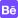

<nav style="padding-top:30px;" class="navbar navbar-expand-lg navbar-light">
    <a href="https://rastmobile.com/" target="_blank">
        <span>
            
        </span>
    </a>
    <button class="navbar-toggler" type="button" data-toggle="collapse" data-target="#navbarNav"
        aria-controls="navbarNav" aria-expanded="false" aria-label="Toggle navigation">
        <span class="navbar-toggler-icon"></span>
    </button>
    <div id="navbarNav" style="justify-content: center;" class="collapse navbar-collapse">
        <div id="navbarContainer">
            <ul id="navigationList" style="color:black" class="navbar-nav">
                <li class="nav-item" href="/mat/tespitraporu">
                    <a class="nav-link" href="">Hakkımızda </a>
                </li>
                <li ui-sref="mulkiyet" class="nav-item">
                    <a class="nav-link" href=""> Jüri - Yarışma Yazılımı </a>
                </li>
                <li ui-sref="gorevatama" class="nav-item">
                    <a class="nav-link" href=""> Word Ninja </a>
                </li>
                <li ui-sref="yonetim" class="nav-item">
                    <a class="nav-link" href="">Word Pyramids </a>
                </li>

            </ul>
        </div>
    </div>
    <!-- <div style="display: flex; align-content: center; justify-content: center; align-items: center;margin-right:20px;">
        <div>
            <a  href="https://www.youtube.com/"  target="_blank"> 
                

            </a>
            <a href="https://www.instagram.com/mobilerast/" target="_blank">
                
            </a>
            <a  href="https://www.behance.net/rastmobile" target="_blank">
                
            </a>
            <a href="https://tr.linkedin.com/company/rastmobile" target="_blank">
                
            </a>
        </div>
    </div> -->

</nav>
<style>
    .nav-link {
        font-family: 'Poppins';
        font-style: normal;
        font-weight: 400;
        font-size: 14px;
        line-height: 21px;
    }

    ul {
        color: black;
        width: 60%;
        display: flex;
        align-items: center;
        justify-content: space-around;
    }

    a {
        color: #000000 !important;
        text-decoration: none;
    }

    .socialIcon {
        width: 20px;
        height: 20px;
        margin-left: 5px;
        border-radius: 4px;
    }

    a:hover {
        color: #a5a5a5 !important;
    }

    #navbarContainer {
        width: 100%;
        justify-content: center;
        display: flex;
    }
</style>